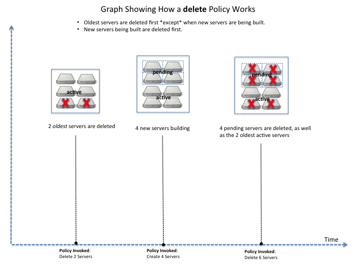
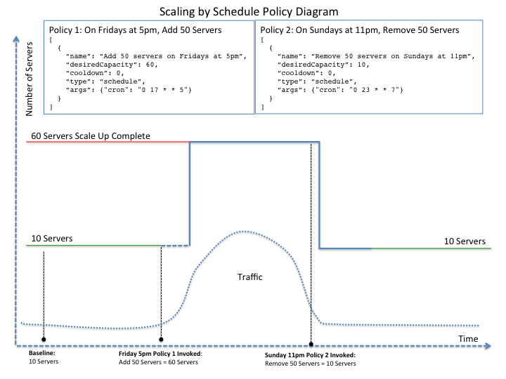

Rackspace Autoscale API, 1.0#
Learn how to use the Cloud Images service by using the ReST API.
- See the Developer Guide for details about using the API.
- See the API reference, for details about API resources, operations, requests and responses.
About the Autoscale API#
The Rackspace Auto Scale API enables developers to interact with the Rackspace Autoscale service through a simple Representational State Transfer (REST) web service interface.
You use the Auto Scale service to automatically scale resources in response to an increase or decrease in overall workload based on user-defined policies. You can set up a schedule for launching Auto Scale or define an event that is triggered by Cloud Monitoring. You can also specify a minimum and maximum number of cloud servers, the amount of resources that you want to increase or decrease, and the thresholds in Cloud Monitoring that trigger the scaling activities.
To use Auto Scale through the API, you submit API requests to define a scaling group consisting of cloud servers and cloud load balancers or RackConnect v3. Then you define policies, either schedule-based or monitoring-based. For monitoring-based policies, you define cloud monitoring alerts to watch the group’s activity, and you define scaling rules to change the scaling group’s configuration in response to alerts. For schedule-based policies, you simply set a schedule. Because you can change a scaling group’s configuration in response to changing workloads, you can begin with a minimal cloud configuration and grow only when the cost of that growth is justified.
Rackspace pricing and terms of service#
Rackspace Auto Scale is part of the Rackspace Cloud. The Auto Scale service relies on other services that are part of the Rackspace Cloud; - Rackspace Next Gen Cloud Servers pricing
- Rackspace Cloud Load Balancers
- Rackspace Cloud Monitoring pricing
The cost for API usage follows the pricing for these services.
The service level agreement (SLA) for the service is included in the Rackspace Cloud SLA.
The terms of service are part of the Rackspace Cloud Terms of Service. Periodically review these terms because they can be updated any time.
Additional resources#
Rackspace Auto Scale is an open-source project. You can see and contribute to source code by using the AutoScale github repository.
For general information about Auto Scale, see the Auto Scale FAQ in the Rackspace Knowledge Center.
We welcome feedback, comments, and bug reports. Log into the Rackspace customer portal at https://feedback.rackspace.com/.
To learn about working with Rackspace services through APIs, visit the Rackspace API Documentation.
For background information and exercises, see the Rackspace Auto Scale Getting Started Guide Overview
To learn about working with Rackspace services through the Rackspace Cloud Control Panel, visit the Rackspace Knowledge Center.
To see the Auto Scale API operations in various common programming languages, view the Quick Start for AutoScale.
Use the tabs at the top to see the different supported languages.
Getting help#
Rackspace provides fanatical support:
- Join the Developer forum to get help from the Rackspace Cloud Developer community.
- To access live chat, support tickets, and support phone numbers, go to the Contact Us page.
- For product information, access to live chat, phone numbers, or login to the Cloud Control Panel, go to the Rackspace Support home page.
- To learn about Rackspace managed hosting support, go to the Managed Support or the Dedicated Support page.
- For a list of all offices, addresses, and phone numbers, go to the Contact Rackspace page.
Developer Guide#
This document is intended for software developers who are interested in developing applications by using the Rackspace Auto Scale API. To use the information provided here, you should have a general understanding of the Rackspace Auto Scale service and have a Rackspace Cloud account that has access to the service. You should also be familiar with the following technologies:
- RESTful web services
- HTTP/1.1 conventions
- JSON data serialization formats
Auto Scale concepts#
To use the Auto Scale API effectively, you should understand several key concepts, discussed in this chapter.
How AutoScale works#
Rackspace Auto Scale is an API-based tool that automatically scales resources in response to an increase or decrease in overall workload based on user-defined thresholds.
Auto Scale is written in python and calls the Rackspace Cloud Servers, Rackspace Cloud Load Balancers, and Rackspace RackConnect V3 APIs. All Rackspace Cloud Server create server configuration parameters can be used with Auto Scale. For more information, see the following documentation:
- Rackspace Cloud Servers documentation
- public Auto Scale github documentation
- public Auto Scale github Wiki
Auto Scale functions by linking these services:
- Rackspace Cloud Servers. Learn more at Cloud Servers Getting Started Guide
- Load-balanced Cloud Servers. Learn more at Load Balancers Getting Started Guide.
You can set up a schedule for launching Auto Scale or define an event that triggers a webhook. You can also specify a minimum and maximum number of cloud servers for your scaling group, the amount of resources you want to increase or decrease, and policies based on percentage or real numbers.
Note
- Auto Scale does not configure any information within a server. You must configure your services to function when each server is started. We recommend automating your servers’ startup processes with Chef or a similar tool.
- Auto Scale can use all Rackspace Cloud Server create server API parameters. For more details, see the Create servers documentation.
Scaling groups#
The scaling group is at the heart of an Auto Scale deployment. The scaling group specifies the basic elements of the Auto Scale configuration. It manages how many servers can participate in the scaling group. It also specifies information related to load balancers if your configuration uses a load balancer.
When you create a scaling group, you specify the details for group configurations and launch configurations.
| Configuration | Description |
|---|---|
| Group Configuration | Outlines the basic elements of the Auto Scale configuration. The group configuration manages how many servers can participate in the scaling group. It sets a minimum and maximum limit for the number of entities that can be used in the scaling process. It also specifies information related to load balancers. |
| Launch Configuration | Creates a blueprint for how new servers will be created. The launch configuration specifies what type of server image will be started on launch, what flavor the new server is, and which cloud load balancer or RackConnect v3 load balancer pool the new server connects to. Note: The launchConfiguration uses the admin user to scale up, usually the first admin user found on the tenant. Only that particular admin user’s SSH key pair names can be used in the launchConfiguration. Note: The launchConfiguration update operation overwrites all launchConfiguration settings. |
The launchConfiguration specifies the launch type along with server and load balancer configuration for the components to start based on the sp. Most launch configurations have both a server and a load balancer (can be RackConnect v3) configured as shown in the Launch configuration examples .
type- Set the type parameter to this value:
launch_server. argsSpecifies the configuration for server and load balancers. Most launch configurations have both a server and a load balancer (can be RackConnect v3) configured.items to be configured:
server- Specifies configuration information for the Cloud server
image that will be created during the scaling process. If you are using Boot From
Volume, the
serverargs are where you specify your create server template. See Server parameters. loadbalancersSpecifies the configuration information for the load balancer(s) used in the cloud server deployment, including a RackConnect v3 load balancer pool. For background information and an example configuration, see Cloud Bursting with RackConnect v3 <cloud-bursting>.
Note
You must include the
ServiceNetnetwork in your configuration if you use a load balancer so the load balancer can retrieve the IP address of new servers. See Load balancer parameters.
Server parameters#
Specifies configuration information for the Cloud server image that will
be created during the scaling process. If you are using Boot From
Volume, the server args are where you specify your create servertemplate.
The server group parameter specifies details about the server as
described in the following table. Note the server arguments are
directly passed to nova when creating a server.
For more information see Create Your Server with the nova Client.
Parameter name and description
name- Specifies a prefix to the name for created servers. The name of new
servers will be automatically generated using the following formula:
[serverName]-AS[uniqueHash], and will look similar to the following:[serverName]-AS12fabe. The name of new servers may be truncated to fit within the limit of 255 characters. flavorRef- Specifies the flavor id for the server,
performance1-4for example. A flavor is a resource configuration for a server. For details, see Server flavors. imageRef- Specifies the ID of the Cloud Server image to start,
0d589460-f177-4b0f-81c1-8ab8903ac7d8for example. OS-DCF:diskConfig- Specifies how the disk on new servers is partitioned. Valid values are
AUTOorMANUAL. For non-Rackspace server images, this value must always beMANUAL. A non-Rackspace server image would be one that you imported using a non-Rackspace server. For more information, see the Disk Configuration documentation for Rackspace Cloud Servers. metadataOptional. The maximum size of the metadata key and value is 255 bytes each. For details, see the Server Metadata documentation for Rackspace Cloud Servers. You use this attribute to configure RackConnect v2 with Auto Scale Cloud Bursting Using Auto Scale, RackConnect, and F5 Load Balancers.
You do NOT use this parameter to configure Auto Scale and RackConnect v3, you use the
loadBalancersparameter for that.networks- Specifies the networks to which you want to attach the server. This
attribute enables you to attach to an isolated network for your tenant
ID, the public Internet, and the private ServiceNet. If you do not
specify any networks, your server is attached to the public Internet and
private ServiceNet. The UUID for the private ServiceNet is
11111111-1111-1111-1111-111111111111. The UUID for the public Internet is00000000-0000-0000-0000-000000000000. personality- Specifies the file path or the content to inject into a server image. See the Server Personality documentation for Rackspace Cloud Servers.
user_data- Specifies the base64 encoded create server template that you use to Boot from Volume. For details, see the Config-Drive Extension section of the Next Generation Cloud Servers Developer Guide. For more information on Boot from Volume, see the developer blog Using Cloud Init with Rackspace Cloud.
Load balancer parameters#
Load balancer parameters specify the configuration information for the load balancer(s) used in
the cloud server deployment, including a RackConnect v3 load balancer
pool. For background information and an example configuration, see
Cloud Bursting with RackConnect
v3. Please note that you must
include the ServiceNet network in your configuration if you use a
load balancer so the load balancer can retrieve the IP address of new
servers.
Parameter name and description
loadBalancerId- Specifies the ID of the load balancer that is automatically generated when the load balancer is created.
portThe server port for receiving traffic from the load balancer, often poirt 80.
Note
You can get information about your load balancer from the Control Panel or by using List Load Balancer Details.
Launch configuration examples#
The following example shows a launch configuration of type “launch_server” for a cloud server and a load balancer:
Example: Launch configuration
"launchConfiguration": {
"args": {
"loadBalancers": [
{
"port": 8080,
"loadBalancerId": 9099
}
],
"server": {
"name": "autoscale_server",
"imageRef": "0d589460-f177-4b0f-81c1-8ab8903ac7d8",
"flavorRef": "performance1-2",
"OS-DCF:diskConfig": "AUTO",
"metadata": {
"build_config": "core",
"meta_key_1": "meta_value_1",
"meta_key_2": "meta_value_2"
},
"networks": [
{
"uuid": "11111111-1111-1111-1111-111111111111"
},
{
"uuid": "00000000-0000-0000-0000-000000000000"
}
],
"personality": [
{
"path": "/root/.csivh",
"contents": "VGhpcyBpcyBhIHRlc3QgZmlsZS4="
}
]
}
},
"type": "launch_server"
Example: Launch configuration for boot from volume
"launchConfiguration": {
"args": {
"server": {
"name": "autoscale_server",
"imageRef": "0d589460-f177-4b0f-81c1-8ab8903ac7d8",
"flavorRef": "performance1-2",
"OS-DCF:diskConfig": "AUTO",
"metadata": {
"build_config": "core",
"meta_key_1": "meta_value_1",
"meta_key_2": "meta_value_2"
},
"user_data": "very long base64 encoded string goes here"
"networks": [
{
"uuid": "11111111-1111-1111-1111-111111111111"
},
{
"uuid": "00000000-0000-0000-0000-000000000000"
}
],
"personality": [
{
"path": "/root/.csivh",
"contents": "VGhpcyBpcyBhIHRlc3QgZmlsZS4="
}
]
}
},
"type": "launch_server"
The “very long base64 encoded string”would provide your create server template.
Here is an example of a very simple create server template that you could base64 encode. You can use this template to install the apache2 package and runs a shell command.
Example: Create server template for RackConnect v3
{
"type": "launch_server",
"args": {
"loadBalancers": [
{
"loadBalancerId": "4fe1b258-f7c9-4688-a3ab-0c90e654b98",
"type": "RackConnectV3"
},
{
"loadBalancerId": "cf2c0cc4-7631-4863-ad22-fb8fc2b6b8d",
"type": "RackConnectV3"
}
],
"server": {
"flavorRef": "performance1-1",
"imageRef": "3cb52e99-ccb8-490f-a482-9eba116bae9",
"name": "jp-as-sg-wosn",
"metadata": {},
"networks": [
{
"uuid": "07426958-1ebf-4c38-b032-d456820ca2a"
}
]
}
}
}
Learn more#
See the following topics for information about configuring Cloud Servers through an API.
- Next Generation Cloud Servers Getting Started Guide
- Next Generation Cloud Servers Developer Guide
- RackConnect v3 API
See these topics for information about configuring Cloud Load Balancers through an API:
Webhooks and capability URLs#
Auto Scale uses webhooks to initiate scaling events. A webhook is an industry-standard protocol for sending events between systems; for Auto Scale, they are used to execute policies. A webhook consists of an HTTP callback that is triggered by some user-defined event, such as an alarm that is set through Cloud Monitoring or another monitoring service. When that event occurs, the source site makes an HTTP request to the URI configured for the webhook.
A webhook contains a POST call to a defined URL, potentially with a payload in the POST body. You can send webhooks with a simple call in the library that you are using. You can also send them manually via cURL:
Example: POST request to execute a webhook
curl -v https://example.com/webhook -X POST -d "payload=payload"
Auto Scale only supports anonymous webhooks. In regular webhooks, the {webhook_version}/{webhook_hash} is specified by URL. In anonymous webhooks, the URL is replaced with a hash that is known only to the issuer— because no authentication is needed, the webhook is considered “anonymous.”
Auto Scale uses Capability URLs in conjunction with webhooks. Capability URLs are URLs that give authorization for a certain action or event. If you know the URL, you have access to it and you can use the URL to trigger a specific event. Capability URLs are usually long, and random, and cannot be guessed by a user.
When a webhook is created, Auto Scale creates values for the
capabilityVersion and capabilityHash parameters. These values
are created per webhook, not per policy. When you create a webhook, you
associate it with a policy. The response to the webhook creation request
includes a single capability URL that is also, by inheritance,
associated with the policy.
The Auto Scale webhook architecture allows Auto Scale to be integrated with other systems, for example, monitoring systems. So, now you have this URL that will execute a specific policy and you can fire off that URL based on events happening outside of Auto Scale.
To execute a capability URL, locate the URL in your webhook, and then submit a POST request against it, as shown in the following example:
Example: POST request to execute a capability URL
curl --include \
--request POST \
"https://ord.autoscale.api.rackspacecloud.com/v1.0/execute/1/be624bfb20f07baddc278cd978c1ddca56bdb29a1c7b70bbeb229fe0b862c134" -v
Executing a capability URL or an anon`ymous webhook will always return a
202, Accepted, response code, even if the request fails because of
an invalid configuration. This is done to prevent information leakage.
Note
To execute anonymous webhooks and capability URLs, no authentication is needed. You can use a capability URL to trigger multiple webhooks.
Scaling policies#
Auto Scale uses policies to define the scaling activity that will take place, as well as when and how that scaling activity will take place. Scaling policies specify how to modify the scaling group and its behavior. You can specify multiple policies to manage a scaling group.
You can create two kinds of Auto Scale policies:
- Policies that trigger Auto Scale activities through a webhook.
- Policies that trigger Auto Scale activities based on a schedule.
Webhook-based policies#
You can define a scaling policy that is invoked by a webhook when a predefined event occurs.
Note
The change, changePercent, and desiredCapacity parameters
are mutually exclusive. You can only set one of them per policy.
To configure a webhook-based policy, you set the typeparameter to
webhook and then specify the parameter values.
Webhook-triggered Policies parameter descriptions
change- Specifies the number of entities to add or remove, for example “1” implies that 1 server needs to be added. Use to change the number of servers to a specific number. If a positive number is used, servers are added; if a negative number is used, servers are removed.
changePercent- Specifies the change value in per cent. Use to change the percentage of servers relative to the current number of servers. If a positive number is used, servers are added; if a negative number is used, servers are removed. The absolute change in the number of servers is always rounded up. For example, if -X% of the current number of servers translates to -0.5 or -0.25 or -0.75 servers, the actual number of servers that will be shut down is 1.
desiredCapacity- Specifies the final capacity that is desired by the scale up event. Note that this value is always rounded up. Use to specify a number of servers for the policy to implement—by either adding or removing servers as needed.
The webhook object takes no args parameter.
Note
The change, changePercent, and desiredCapacity parameters
are mutually exclusive. You can only set one of them per policy.
Schedule-based policies#
You can define a scaling policy that is invoked by a preset schedule.
Note
The change, changePercent, and desiredCapacity parameters
are mutually exclusive. You can only set one of them per policy.
To configure a schedule-based policy, set the type parameter to
“schedule” and then specify the parameter values.
Scheduled-based Policy parameter descriptions
change- Specifies the number of entities to add or remove, for example “1” implies that 1 server needs to be added. Use to change the number of servers to a specific number. If a positive number is used, servers are added; if a negative number is used, servers are removed.
changePercent- Specifies the change value, in incremental stages or per cent. Use to change the percentage of servers relative to the current number of servers. If a positive number is used, servers are added; if a negative number is used, servers are removed. The absolute change in the number of servers is always rounded up. For example, if -X% of the current number of servers translates to -0.5 or -0.25 or -0.75 servers, the actual number of servers that will be shut down is 1.
desiredCapacity- Specifies final capacity that is desired by the scale up event. Use to specify a number of servers for the policy to implement—by either adding or removing servers as needed.
args- Provide information related to the time when the policy is supposed to be invoked.
For example to use Cron, a time-based job scheduler, specify the time to invoke the policy in CRON format, as shown in the following example, which configures the policy to be invoked at 6 AM every day:
Example: Schedule-based policy using cron
[
{
"cooldown": 600,
"args":
{"cron": "0 6 * * *"
},
"type": "schedule",
"name": "testscheduler_736835",
"desiredCapacity": 2
}
]
To set the time at which the policy will be invoked directly, without Cron, use the “at” argument and specify the time using the format that is shown in the following example:
Example: Schedule-based policy specifying direct time
[
{
"cooldown": 600,
"args": {
"at": "2013-11-06T22:28:21.684336Z"
},
"type": "schedule",
"name": "testscheduler_497090",
"desiredCapacity": 2
}
]
Scaling by percentage#
You can define a policy that scales your server resources up and down by a predefined percentage. For example, you can define a policy to increase your resources by 20% if a certain predefined event occurs as illustrated in the following figure.
Scale by percentage in response to webhook trigger event

Using the min and max values with policies#
When setting up your scaling groups, you configure the minimum and
maximum number of resources that are allowed. These values are specified
in the minEntities and maxEntities parameters under group
configuration, and are invoked whenever you update your group
configuration.
Important
If the number of resources that is specified in a policy differs from the amount that is specified under group configuration, the preconfigured values take precedence.
Scale by percentage based on min and max values

Deleting resources#
You can set a policy to specify when to delete resources, and how many resources to delete.
When deleting servers, Auto Scale follows these rules:
- If no new servers are in the process of being built, the oldest servers are deleted first.
- If new servers are in the process of being built and in a “pending” state, these servers are deleted first.
The following diagram illustrates how the deletion process works.
Delete policy for server resources
Cooldowns#
Auto Scale supports a cooldown feature. A cooldown is a configured period of time that must pass between actions. Cooldowns only apply to webhook-based configurations. By configuring group cooldowns, you control how often a group can have a policy applied, which can help servers scaling up to complete the scale up before another policy is executed. By configuring policy cooldowns, you control how often a policy can be executed, which can help provide quick scale-ups and gradual scale-downs.
Cooldowns work the following way:
- Group cooldowns control how often a group can be modified by denying all policy executions until the cooldown expires—even if conditions exist that would trigger one.
- Policy cooldowns control how often a single, specific policy can be executed. For example, a policy cooldown can require at least six hours until any successive scale down policies are reactivated.
Note
Cooldown configuration is irrelevant for schedule-based configurations and the Group Cooldown and Policy Cooldown can both be set to 0 (null).
Schedule-based configurations#
You can configure Auto Scale to be triggered based on a user-defined schedule that is specified in one or more policies.
This configuration option is helpful if you know that your Cloud Servers deployment will need additional resources during certain peak times. For example, if you need additional server resources during the weekend, you can define a policy that adds 50 servers on Friday evening and then removes these servers again on Sunday evening to return to a regular operational state.
Scale servers by schedule
Event-based configurations#
You can configure Auto Scale to be triggered through a webhook, based on a predefined alarm or threshold that has been previously set up in a monitoring service. Event-based configuration works the following way:
- In your monitoring service, you configure alarms that are triggered when a high utilization of resources occurs
- In Auto Scale, you configure a scaling group, scaling policies, and a webhook to be triggered when your monitoring service sets off an alarm for high utilization of resources.
- The webhook launches the Auto Scale service, which looks up the policy that has been defined in accordance with the webhook. This policy determines the amount of cloud servers that need to be added or removed.
Note
Servers added through a webhook triggered by an external monitoring service will not be automatically monitored by the external monitoring service.
Cloud bursting with RackConnect v3#
You can use Auto Scale with a hybrid, dedicated and cloud, solution to “burst” into the cloud when extra servers are temporarily needed. To do this, you use RackConnect v3, a Rackspace solution that works with Rackspace cloud servers and creates a secure bridge between the Rackspace cloud and your dedicated hardware.
To get started with RackConnect v3 cloud bursting:
- Contact your Rackspace Support team and tell them what you want to do. They will configure a load balancer pool for you and give you the UUID.
- Configure your
launchConfiguration loadBalancersattributes with the load balancer pool UUID that was given to you as theloadBalancerIdand useRackConnect v3for thetype. Do not set a value forport.
Example: RackConnect v3 launchConfiguration with two load balancer pools
{
"type": "launch_server",
"args": {
"loadBalancers": [
{
"loadBalancerId": "4fe1b258-f7c9-4688-a3ab-0c90e654b98",
"type": "RackConnectV3"
},
{
"loadBalancerId": "cf2c0cc4-7631-4863-ad22-fb8fc2b6b8d",
"type": "RackConnectV3"
}
],
"server": {
"flavorRef": "performance1-1",
"imageRef": "3cb52e99-ccb8-490f-a482-9eba116bae9",
"name": "jp-as-sg-wosn",
"metadata": {},
"networks": [
{
"uuid": "07426958-1ebf-4c38-b032-d456820ca2a"
}
]
}
}
}
Related information
General API information#
Ideas explained here are relevant to all operations of the API. See the API Reference for details about specific operations.
The Auto Scale API is implemented using a RESTful web service interface. Like other products in the Rackspace Cloud suite, Auto Scale shares a common token-based authentication system that allows seamless access between products and services.
Authentication#
Every ReST request against a Rackspace Cloud service requires the inclusion of a specific authorization token, supplied by the X-Auth-Token HTTP header. Customers obtain this token by first using the Rackspace Cloud Identity service and supplying valid authentication credentials.
Authentication endpoint#
The Rackspace Cloud Authentication Service serves as the entry point to all Rackspace Cloud APIs and is itself a ReSTful web service.
Use the following endpoint to access the Cloud Identity service:
https://identity.api.rackspacecloud.com/v2.0/
Note that the v2.0 component in the URL indicates that you are using version 2.0 of the Cloud Authentication API.
Authenticating by using token-based authentication#
Before you can make Rackspace Cloud API requests, you must
first generate an authentication token. You provide this
token in the X-Auth-Token header in each Rackspace Cloud API request.
The examples below demonstrate how to use cURL to obtain the authentication token and your account number. You must provide both when making subsequent API requests.
Remember to replace the placeholder names in the following authentication request examples with your information:
yourUserName — Your common Rackspace Cloud username, as supplied during registration.
yourApiKey — Your API access key.
You can obtain the key from the Rackspace Cloud Control Panel by selecting Account Settings from the yourAccount menu in the top-right corner of the window.
In the following examples, you submit the request against the Rackspace Cloud Identity service endpoint. If the request is successful, the authentication response returns the authentication token, service catalog, and user information as shown in the example authentication response. You can use this information to submit an API request.
Example: Authentication request, JSON
curl -s https://identity.api.rackspacecloud.com/v2.0/tokens -X 'POST' \
-d '{"auth":{"RAX-KSKEY:apiKeyCredentials":{"username":"yourUserName",
"apiKey":"yourApiKey"}}}' \
-H "Content-Type:
application/json"
Example: Authentication request, XML
POST /v2.0/tokens HTTP/1.1
User-Agent: curl/7.21.0 (x86_64-pc-linux-gnu) libcurl/7.21.0 OpenSSL/0.9.8o zlib/1.2.3.4 libidn/1.15 libssh2/1.2.6
Host: identity.api.rackspacecloud.com
Accept: application/xml
Content-Type: application/xml
Content-Length: 88
<?xml version="1.0" encoding="UTF-8"?>
<auth>
<apiKeyCredentials
xmlns="http://docs.rackspace.com/identity/api/ext/RAX-KSKEY/v1.0"
username="jsmith" **<1>**
apiKey="aaaaa-bbbbb-ccccc-12345678"/> **<2>**
</auth>
Example: Authentication response, JSON
{
"access": {
"serviceCatalog": [
{
"endpoints": [
{
"internalURL": "https://snet-storage101.dfw1.clouddrive.com/v1/MossoCloudFS_530f8649-324c-499c-a075-2195854d52a7",
"publicURL": "https://storage101.dfw1.clouddrive.com/v1/MossoCloudFS_530f8649-324c-499c-a075-2195854d52a7",
"region": "DFW",
"tenantId": "MossoCloudFS_530f8649-324c-499c-a075-2195854d52a7"
},
{
"internalURL": "https://snet-storage101.ord1.clouddrive.com/v1/MossoCloudFS_530f8649-324c-499c-a075-2195854d52a7",
"publicURL": "https://storage101.ord1.clouddrive.com/v1/MossoCloudFS_530f8649-324c-499c-a075-2195854d52a7",
"region": "ORD",
"tenantId": "MossoCloudFS_530f8649-324c-499c-a075-2195854d52a7"
}
],
"name": "cloudFiles",
"type": "object-store"
},
{
"endpoints": [
{
"publicURL": "https://servers.api.rackspacecloud.com/v1.0/010101",
"tenantId": "010101",
"versionId": "1.0",
"versionInfo": "https://servers.api.rackspacecloud.com/v1.0",
"versionList": "https://servers.api.rackspacecloud.com/"
}
],
"name": "cloudServers",
"type": "compute"
},
{
"endpoints": [
{
"publicURL": "https://dfw.servers.api.rackspacecloud.com/v2/010101",
"region": "DFW",
"tenantId": "010101",
"versionId": "2",
"versionInfo": "https://dfw.servers.api.rackspacecloud.com/v2",
"versionList": "https://dfw.servers.api.rackspacecloud.com/"
},
{
"publicURL": "https://ord.servers.api.rackspacecloud.com/v2/010101",
"region": "ORD",
"tenantId": "010101",
"versionId": "2",
"versionInfo": "https://ord.servers.api.rackspacecloud.com/v2",
"versionList": "https://ord.servers.api.rackspacecloud.com/"
}
],
"name": "cloudServersOpenStack",
"type": "compute"
}
],
"token": {
"expires": "2012-09-14T15:11:57.585-05:00",
"id": "858fb4c2-bf15-4dac-917d-8ec750ae9baa",
"tenant": {
"id": "010101",
"name": "010101"
}
},
"user": {
"RAX-AUTH:defaultRegion": "DFW",
"id": "170454",
"name": "MyRackspaceAcct",
"roles": [
{
"description": "User Admin Role.",
"id": "3",
"name": "identity:user-admin"
}
]
}
}
}
Example: Authentication response, XML
HTTP/1.1 200 OK
Content-Type: application/xml; charset=UTF-8
Content-Length: 477
Date: Thu, 12 Apr 2012 18:50:20 GMT
<?xml version="1.0" encoding="UTF-8" standalone="yes"?>
<access xmlns:os-ksadm="http://docs.openstack.org/identity/api/ext/OS-KSADM/v1.0"
xmlns="http://docs.openstack.org/identity/api/v2.0"
xmlns:rax-kskey="http://docs.rackspace.com/identity/api/ext/RAX-KSKEY/v1.0"
xmlns:rax-ksqa="http://docs.rackspace.com/identity/api/ext/RAX-KSQA/v1.0"
xmlns:common="http://docs.openstack.org/common/api/v1.0"
xmlns:ksgrp="http://docs.rackspace.com/identity/api/ext/RAX-KSGRP/v1.0"
xmlns:rax-kscatalog="http://docs.openstack.org/identity/api/ext/OS-KSCATALOG/v1.0"
xmlns:atom="http://www.w3.org/2005/Atom">
<token id="vvvvvvvv-wwww-xxxx-yyyy-zzzzzzzzzzzz" expires="2011-12-08T22:51:02.000-06:00"/>
<user id="123456" name="jsmith" rax-auth:defaultRegion="DFW">
<roles>
<role id="identity:admin" name="identity:admin" description="Admin Role."/>
<role id="identity:default" name="identity:default" description="Default Role."/>
</roles>
</user>
<serviceCatalog>
<service type="rax:database" name="cloudDatabases">
<endpoint region="DFW" tenantId="1100111" publicURL="https://dfw.databases.api.rackspacecloud.com/v1.0/1100111"/>
<endpoint region="ORD" tenantId="1100111" publicURL="https://ord.databases.api.rackspacecloud.com/v1.0/1100111"/>
</service>
<service type="rax:load-balancer" name="cloudLoadBalancers">
<endpoint region="DFW" tenantId="1100111" publicURL="https://dfw.loadbalancers.api.rackspacecloud.com/v1.0/1100111"/>
<endpoint region="ORD" tenantId="1100111" publicURL="https://ord.loadbalancers.api.rackspacecloud.com/v1.0/1100111"/>
</service>
<service type="compute" name="cloudServersOpenStack">
<endpoint region="DFW" tenantId="1100111"
publicURL="https://dfw.servers.api.rackspacecloud.com/v2/1100111">
<version id="2" info="https://dfw.servers.api.rackspacecloud.com/v2/"
list="https://dfw.servers.api.rackspacecloud.com/" />
</endpoint>
<endpoint region="ORD" tenantId="1100111"
publicURL="https://ord.servers.api.rackspacecloud.com/v2/1100111">
<version id="2" info="https://ord.servers.api.rackspacecloud.com/v2/"
list="https://ord.servers.api.rackspacecloud.com/" />
</endpoint>
</service>
<service type="compute" name="cloudServers">
<endpoint tenantId="1100111"
publicURL="https://servers.api.rackspacecloud.com/v1.0/1100111">
<version id="1.0"
info="https://servers.api.rackspacecloud.com/v1.0/"
list="https://servers.api.rackspacecloud.com/"/>
</endpoint>
</service>
<service type="object-store" name="cloudFiles">
<endpoint region="DFW"
tenantId="MossoCloudFS_aaaaaaaa-bbbb-cccc-dddd-eeeeeeee"
publicURL="https://storage101.dfw1.clouddrive.com/v1/MossoCloudFS_aaaaaaaa-bbbb-cccc-dddd-eeeeeeee"
internalURL="https://snet-storage101.dfw1.clouddrive.com/v1/MossoCloudFS_aaaaaaaa-bbbb-cccc-dddd-eeeeeeee"/>
<endpoint region="ORD"
tenantId="MossoCloudFS_aaaaaaaa-bbbb-cccc-dddd-eeeeeeee"
publicURL="https://storage101.ord1.clouddrive.com/v1/MossoCloudFS_aaaaaaaa-bbbb-cccc-dddd-eeeeeeee"
internalURL="https://snet-storage101.ord1.clouddrive.com/v1/MossoCloudFS_aaaaaaaa-bbbb-cccc-dddd-eeeeeeee"/>
</service>
<service type="rax:object-cdn" name="cloudFilesCDN">
<endpoint region="DFW"
tenantId="MossoCloudFS_aaaaaaaa-bbbb-cccc-dddd-eeeeeeee"
publicURL="https://cdn1.clouddrive.com/v1/MossoCloudFS_aaaaaaaa-bbbb-cccc-dddd-eeeeeeee"/>
<endpoint region="ORD"
tenantId="MossoCloudFS_aaaaaaaa-bbbb-cccc-dddd-eeeeeeee"
publicURL="https://cdn2.clouddrive.com/v1/MossoCloudFS_aaaaaaaa-bbbb-cccc-dddd-eeeeeeee"/>
</service>
<service type="rax:dns" name="cloudDNS">
<endpoint tenantId="1100111"
publicURL="https://dns.api.rackspacecloud.com/v1.0/1100111"/>
</service>
</serviceCatalog>
</access>
Note
For detailed information about the authentication request and response, see authentication request and response in the Cloud Identity Developer Guide.
Submit API request#
After you authenticate successfully, you can submit an API request for any service included in the service catalog.
In the authentication response, copy the token
idvalue from the token object and save it, or export it to an environment variable that can be supplied in theX-Auth-Tokenheader required in each API request. In this example, the token value is123abc5368901230076b12357897898."token": { "RAX-AUTH:authenticatedBy": [ "APIKEY" ], "expires": "2015-01-09T15:08:53.645-06:00", "id": "123abc5368901230076b12357897898" }Find the endpoint URL for the service that you want to access.
For example, the endpoint URL for Cloud Files is
https://storage101.ord1.clouddrive.com/v1/yourTenantID.Submit an API request to the service endpoint that you identified.
The following example shows a cURL request to retrieve a list of containers for a tenant by using the Cloud Files API.
$ cURL -i -s \ -X GET https://storage101.ord1.clouddrive.com/v1/MossoCloudFS_9c24e3db-52bf-4f26-8dc1-220871796e9f \ -H "X-Auth-Token: $AUTH_TOKEN" \ -H "Content-type: application/json" --verbose | python -m json.tool
If the authentication token is accepted, the Cloud Files service returns the following response if the authentication token is accepted.
GET /v1/MossoCloudFS_9c24e3db-52bf-4f26-8dc1-220871796e9f HTTP/1.1 User-Agent: curl/7.30.0 Host: storage101.ord1.clouddrive.com Accept: */* X-Auth-Token: 69dc089d983f4729af29bec5a7dc6426 Content-type: application/json HTTP/1.1 200 OK Content-Length: 22 X-Account-Object-Count: 0 X-Account-Storage-Policy-Policy-0-Bytes-Used: 0 X-Timestamp: 1345588196.72805 X-Account-Storage-Policy-Policy-0-Object-Count: 0 X-Account-Meta-Temp-Url-Key: e1f97840118eafc550d45dbd8e530c11 X-Account-Bytes-Used: 0 X-Account-Container-Count: 3 Content-Type: text/plain; charset=utf-8 Accept-Ranges: bytes X-Trans-Id: tx1353de66dd9d49da84eda-00544799f4ord1 Date: Wed, 15 June 2015 11:50:12 GMT metest mytest mytest2 * Connection #0 to host storage101.ord1.clouddrive.com left intact
Manage authentication tokens#
Authentication tokens are valid for 24 hours by default. The expiration time stamp is included in the token object returned in the authentication response. Administrators and users can invalidate a token immediately by submitting a Revoke token API request to the Identity service endpoint.
If you re-authenticate before the token expires, the Identity
service returns the same token as long as it remains valid.
When a token expires or becomes invalid, any API request submitted against Rackspace Cloud services returns a 401 error message. To regain access, submit another POST tokens request to the authentication endpoint.
Best practices
Cache authentication tokens.
By default, the Rackspace Cloud Identity service makes an authentication request before every API call.
To speed up your API operations and reduce system load, store the authentication token in a secure cache or database so that the API can use the stored information, instead of having to re-authenticate for each API request. You can re-use the cached token value as long as it remains valid.
Design applications to re-authenticate after receiving a 401 Unauthorized response from a service endpoint, or use either of the following methods to get a new token before the existing token expires.
Submit a POST tokens request within an hour of the token expiration to obtain a new token. Note that this behavior is a Rackspace customization of the OpenStack Identity (keystone) implementation.
Submit a DELETE token request to revoke the existing token, and then followed by a POST tokens request to get a new token.
To simplify authentication, credential, and token management, use an OpenStack command-line client application or one of the Rackspace SDKs.
Service access endpoints#
Rackspace Auto Scale is a regionalized service. The user of the service is therefore responsible for appropriate replication, caching, and overall maintenance of Rackspace Auto Scale data across regional boundaries to other Auto Scale servers.
The following table lists the service access endpoints for Auto Scale though we recommend checking the endpoints returned in the authentication response for the most up-to-date information.
Tip
To help you decide which regionalized endpoint to use, read the About Regions article in the Rackspace Knowledge Center.
Table: Regionalized Service Endpoints
| Region | Endpoint |
|---|---|
| Dallas/Ft. Worth (DFW) | https://dfw.autoscale.api.rackspacecloud.com/v1.0/ 1234/ |
| Dulles (IAD) | https://iad.autoscale.api.rackspacecloud.com/v1.0/ 1234/ |
| Hong Kong (HKG) | https://hkg.autoscale.api.rackspacecloud.com/v1.0/ 1234/ |
| London (LON) | https://lon.autoscale.api.rackspacecloud.com/v1.0/ 1234/ |
| Sydney (SYD) | https://syd.autoscale.api.rackspacecloud.com/v1.0/ 1234/ |
Replace the Tenant ID, 1234, with your actual Tenant ID.
The value for your tenant ID is listed after the final ‘/’ in the publicURL
field returned by the authentication response. For example, in
Example 10, “Authentication response for US endpoint:
JSON” the
publicURL for Auto Scale is:
https://ord.autoscale.api.rackspacecloud.com/v1.0/1100111
The tenant ID is 1100111.
Contract versions#
The Auto Scale version defines the contract and build information for the API.
The contract version denotes the data model and behavior that the API supports. The requested contract version is included in all request URLs. Different contract versions of the API might be available at any given time and are not guaranteed to be compatible with one another.
Example: Sample request URL for contract version 1.0
https://ord.autoscale.api.rackspacecloud.com/v1.0/1234
Note
This document pertains to contract version 1.0.
Request and response types#
The Rackspace Auto Scale API supports JSON data serialization formats only. The request body is assumed to be JSON, and the response body is returned as JSON.
Response Format
| Format | Accept Header | Query Extension | Default |
|---|---|---|---|
| JSON | application/json | .json | Yes |
Pagination#
The Auto Scale API supports pagination of items that are returned in API call responses. Pagination enables users to view all responses even if the number of items returned in the response body is longer than what fits on one page.
The pagination limit for the Auto Scale API is 100. This means you can view 100 items at a time.
For example, if you want to get a list of all the scaling groups, and there are more than 100 groups, you see the first 100 groups on one page and then a link at the bottom of the page that takes you to the next page, which contains the next 100 items.
A pagination limit that is set beyond 100 is defaulted to 100. And a limit that is set to smaller than 1 is defaulted to 1.
The Auto Scale API paginates the following items:
- scaling groups
- scaling policies
- webhooks
Use the limit and marker parameters to navigate the collection of items that are returned in the request.
- Limit is the maximum number of items that can be returned on one page. If the
client submits a request with a limit beyond the 100 items supported by Auto Scale, the response returns
the
413 overLimiterror code. - Marker is the ID of the last item in the previous list. Items are sorted by create time in descending order. When a create time is not available, items are sorted by ID. If the request includes an invalid ID, the response returns the``400 badRequest`` error code.
Note
The limit and marker parameters are optional.
Paginating group lists#
When you submit a request for a group manifest, you receive a list of
all the available scaling groups and associated policies. However, the
response body only lists 100, or whatever number of responses per page
you configure using the limit parameter. If there are more results
available than what you specified in the limit parameter, a next
link is provided in the rel in the response body. This is shown in
the following example that sets the limit parameter value to 2 to list
two responses per page.
$ curl -H "x-auth-token: ${AUTHTOKEN}" /
https://dfw.autoscale.api.rackspacecloud.com/v1.0/851153/groups?limit=2 | python -m json.tool
Example: Paginating group lists example
{
"groups": [
{
"id": "1bb9d1e7-d7d2-4a87-baa3-8902fbfc8f02",
"links": [
{
"href": "https://dfw.autoscale.api.rackspacecloud.com/v1.0/851153/groups/1bb9d1e7-d7d2-4a87-baa3-8902fbfc8f02/",
"rel": "self"
}
],
"state": {
"active": [],
"activeCapacity": 0,
"desiredCapacity": 0,
"name": "test_sgroup711740",
"paused": false,
"pendingCapacity": 0
}
},
{
"id": "d8a0ed6a-c1cd-4578-85e9-ebe88291791d",
"links": [
{
"href": "https://dfw.autoscale.api.rackspacecloud.com/v1.0/851153/groups/d8a0ed6a-c1cd-4578-85e9-ebe88291791d/",
"rel": "self"
}
],
"state": {
"active": [],
"activeCapacity": 0,
"desiredCapacity": 0,
"name": "test_sgroup453884",
"paused": false,
"pendingCapacity": 0
}
}
],
"groups_links": [
{
"href": "https://dfw.autoscale.api.rackspacecloud.com/v1.0/851153/groups/?limit=2&marker=d8a0ed6a-c1cd-4578-85e9-ebe88291791d",
"rel": "next"
}
]
}
For Auto Scale, the limit value range is 1 - 100 inclusive.
If you set the value to a number greater than 100, it defaults to 100.
Set it to less tan 1, and it defaults to 1.
If you provide an invalid query argument for limit, the response returns a
400 message. The marker parameter specifies the last seen
group ID. When you click on the link that is returned, all the groups
displayed will have group Ids that are greater than
f82bb000-f451-40c8-9dc3-6919097d2f7e.
Paginating policy lists#
When you submit a request to obtain all the policies associated with a
scaling group, a list of policies is returned. However, the response
body only lists 100, or whatever number of responses per page you
configure using the limit parameter. If there are more results
available than what you specified in the limit parameter, a next
link is provided in the rel in the response body. This is shown in
the following example that sets the limit parameter value to 2 to list
two responses per page.
$ curl -H "x-auth-token: ${AUTHTOKEN}" \
https://dfw.autoscale.api.rackspacecloud.com/v1.0/851153/groups/f3af279b-10d7-4a26-aead-98c00bff260f/policies?limit=2 | python -m json.tool
Example: Paginating policy lists example
{
"policies": [
{
"change": 10,
"cooldown": 5,
"id": "25adccf9-0077-4510-b37d-90a48c9dc08f",
"links": [
{
"href": "https://dfw.autoscale.api.rackspacecloud.com/v1.0/851153/groups/f3af279b-10d7-4a26-aead-98c00bff260f/policies/25adccf9-0077-4510-b37d-90a48c9dc08f/",
"rel": "self"
}
],
"name": "scale up by 10",
"type": "webhook"
},
{
"args": {
"cron": "0 */2 * * *"
},
"change": 10,
"cooldown": 3,
"id": "2d321cd2-b873-4865-9941-5ea6783fd58c",
"links": [
{
"href": "https://dfw.autoscale.api.rackspacecloud.com/v1.0/851153/groups/f3af279b-10d7-4a26-aead-98c00bff260f/policies/2d321cd2-b873-4865-9941-5ea6783fd58c/",
"rel": "self"
}
],
"name": "Schedule policy to run repeately",
"type": "schedule"
}
],
"policies_links": [
{
"href": "https://dfw.autoscale.api.rackspacecloud.com/v1.0/851153/groups/f3af279b-10d7-4a26-aead-98c00bff260f/policies/?limit=2&marker=2d321cd2-b873-4865-9941-5ea6783fd58c",
"rel": "next"
}
]
}
The marker parameter points to the last seen policy ID. When you
click on the link that is returned, all the policies displayed will have
policy Ids that are greater than f82bb000-f451-40c8-9dc3-6919097d2f7e.
Paginating webhook lists#
When you submit a request to obtain all the webhooks associated with a
policy, a list of webhooks is returned. However, the response body only
lists 100, or whatever number of responses per page you configure using
the limit parameter. If there are more results available than what
you specified in the limit parameter, a next link is provided in
the rel in the response body. This is shown in
the following example that sets the limit parameter value to 2 to list
two responses per page.
$ curl -H "x-auth-token: ${AUTHTOKEN}" \
https://dfw.autoscale.api.rackspacecloud.com/v1.0/851153/groups/f3af279b-10d7-4a26-aead-98c00bff260f/policies/25adccf9-0077-4510-b37d-90a48c9dc08f/webhooks?limit=2 | python -m json.tool
Example: Paginating webhook lists example
{
"webhooks": [
{
"id": "012d0b95-8185-4955-be00-cee9bc25d177",
"links": [
{
"href": "https://dfw.autoscale.api.rackspacecloud.com/v1.0/851153/groups/f3af279b-10d7-4a26-aead-98c00bff260f/policies/25adccf9-0077-4510-b37d-90a48c9dc08f/webhooks/012d0b95-8185-4955-be00-cee9bc25d177/",
"rel": "self"
},
{
"href": "https://dfw.autoscale.api.rackspacecloud.com/v1.0/execute/1/3ae6d5b89b471fd6ac2d8496e19bea1ae6e766c83869903de745bf7ae3fbfd45/",
"rel": "capability"
}
],
"metadata": {},
"name": "webhook3"
},
{
"id": "a5aefc55-1ac8-41a0-8d70-7ee30f56af69",
"links": [
{
"href": "https://dfw.autoscale.api.rackspacecloud.com/v1.0/851153/groups/f3af279b-10d7-4a26-aead-98c00bff260f/policies/25adccf9-0077-4510-b37d-90a48c9dc08f/webhooks/a5aefc55-1ac8-41a0-8d70-7ee30f56af69/",
"rel": "self"
},
{
"href": "https://dfw.autoscale.api.rackspacecloud.com/v1.0/execute/1/ad1cad8361963cc350ac0f1fc4edd2cacc24e0d77eee03b8c0cfaf7feeec7ac3/",
"rel": "capability"
}
],
"metadata": {},
"name": "webhook1"
}
],
"webhooks_links": [
{
"href": "https://dfw.autoscale.api.rackspacecloud.com/v1.0/851153/groups/f3af279b-10d7-4a26-aead-98c00bff260f/policies/25adccf9-0077-4510-b37d-90a48c9dc08f/webhooks/?limit=2&marker=a5aefc55-1ac8-41a0-8d70-7ee30f56af69",
"rel": "next"
}
]
}
The marker parameter points to the last seen webhook ID. When you
click on the link that is provided in the response body, all the
webhooks displayed will have webhook Ids that are greater than
f82bb000-f451-40c8-9dc3-6919097d2f7e.
Limits#
All accounts, by default, have a preconfigured set of thresholds (or limits) to manage capacity and prevent abuse of the system. The system recognizes rate limits and absolute limits . Rate limits are thresholds that are reset after a certain amount of time passes. Absolute limits are fixed.
Rate limits#
Rate limits are specified in terms of both a human-readable wildcard URI and a machine-processable regular expression. The regular expression boundary matcher ‘^’ takes effect after the root URI path.
For example, the regular expression ^/v1.0/execute matches the
bolded portion of the following URI:
https://ord.autoscale.api.rackspacecloud.com /v1.0/execute.
For any user, all Auto Scale operations are limited to 1,000 calls per minute.
In addition, the following table specifies the default rate limits for specific Auto Scale API operations:
Table: Default Rate Limits
| Method | URI | RegEx | Default |
|---|---|---|---|
| GET, PUT, POST, DELETE | /v1.0/execute/* |
/v1\\.0/execute/(.*) |
10 per second |
| GET, PUT, POST, DELETE | /v1.0/tenantId/* |
/v1\\.0/([0-9]+)/.+ |
1000 per minute |
Rate limits are applied in order relative to the verb, going from least
to most specific. For example, although the general threshold for
operations to /v1/0/* is 1,000 per minute, one cannot POST to
/v1.0/execute*more than 1 time per second, which is 60 times per
minute.
If you exceed the thresholds established for your account, a 413 Rate
Control HTTP response is returned with a Retry-After header to
notify the client when it can attempt to try again.
Absolute limits#
Table: Absolute Limits
| Name | Description | Limits |
|---|---|---|
| Groups | Maximum number of groups allowed for your account | 1000 |
| Policies | Maximum volume of Policies per Group | 100 |
| Webhooks | Maximum volume of Webhooks per Policy | 25 |
Faults#
If any Rackspace Auto Scale request results in an error, the service returns an appropriate 4 xx or 5 xx HTTP status code, and the following information in the body:
- Title
- Exception type
- HTTP status code
- Message
For Auto Scale users, common faults are caused by invalid configurations. For example, trying to boot a server from an image that does not exist causes a fault, as does trying to attach a load balancer to a scaling group that does not exist.
An example of error message syntax:
Example: Error message syntax
{ "error": {
"type": "failure type",
"code": HTTP status code,
"message": "detailed message",
"details": "any specific details about the error"
}
}
An example of an error message:
Example: Error message: NoSuchScalingGroup
{ "error": {
"type": "NoSuchScalingGroupError",
"code": 404,
"message": "No such scaling group 5154258e-d7b7-43a3-a8a9-708b66fae2a2 for tenant 823364",
"details": ""
}
}
Error information for each API operation is included with the description of that operation in the API reference section.
Date and time format#
For the display and consumption of date and time values, the Rackspace Autoscale service uses a date format that complies with ISO 8601.
The system time is expressed as UTC.
Example: Autoscale date and time format
yyyy-MM-dd'T'HH:mm:ssZ
For example, the UTC-5 format for May 19, 2013 at 8:07:08 a.m. is
2013-05-19T08:07:08-05:00
Table: Date and time format codes
| yyyy | Four digit year |
|---|---|
| MM | Two digit month |
| DD | Two digit day |
| T | Separator for date/time |
| HH | Two digit hour (00-23) |
| mm | Two digit minute |
| ss | Two digit second |
| Z | RFC 8601 timezone (offset from GMT). If Z is not replaced with the offset from GMT, it indicates a 00:00 offset. |
Server flavors#
When configuring a Cloud Server image through the Control Panel or the API, you chose a specific server flavor. A flavor is an available hardware configuration for a server. Each flavor has a unique combination of disk space and memory capacity. The server flavor that is specified in the Control Panel maps to a specific flavor ID in the Rackspace API. The following table outlines the mapping between flavor ID and the available flavors in the Control Panel.
For more information and details on flavors, see the Server Flavors section in the Rackspace Cloud Servers Developer’s Guide.
Note
The Standard Instance flavors are being phased out. Do not use them when adding servers.
- The Server flavor names have been recently modified:
- Performance 1 flavors are now General Purpose v1 flavors
- Performance 2 flavors are now I/O v1 flavors
Use the List Servers operation, described in the Rackspace Cloud Servers Developer’s Guide to get a list of all current servers.
Table: Supported Flavors for Next Generation Cloud Servers
| ID | Flavor name | Memory (MB) | Disk space | Ephemeral | VCPUs | RXTX factor |
|---|---|---|---|---|---|---|
| 2 | 512 MB Standard Instance | 512 | 20 | 0 | 1 | 80.0 |
| 3 | 1 GB Standard Instance | 1024 | 40 | 0 | 1 | 120.0 |
| 4 | 2 GB Standard Instance | 2048 | 80 | 0 | 2 | 240.0 |
| 5 | 4 GB Standard Instance | 4096 | 160 | 0 | 2 | 400.0 |
| 6 | 8 GB Standard Instance | 8192 | 320 | 0 | 4 | 600.0 |
| 7 | 15 GB Standard Instance | 15360 | 620 | 0 | 6 | 800.0 |
| 8 | 30 GB Standard Instance | 30720 | 1200 | 0 | 8 | 1200.0 |
| general1-1 | 1 GB General Purpose v1 | 1024 | 20 | 0 | 1 | 200.0 |
| general1-2 | 2 GB General Purpose v1 | 2048 | 40 | 0 | 2 | 400.0 |
| general1-4 | 4 GB General Purpose v1 | 4096 | 80 | 0 | 4 | 800.0 |
| general1-8 | 8 GB General Purpose v1 | 8192 | 160 | 0 | 8 | 1600.0 |
| compute1-4 | 3.75 GB Compute v1 | 3840 | 0 | 0 | 2 | 625.0 |
| compute1-8 | 7.5 GB Compute v1 | 7680 | 0 | 0 | 4 | 1250.0 |
| compute1-15 | 15 GB Compute v1 | 15360 | 0 | 0 | 8 | 2500.0 |
| compute1-30 | 30 GB Compute v1 | 30720 | 0 | 0 | 16 | 5000.0 |
| compute1-60 | 60 GB Compute v1 | 61440 | 0 | 0 | 32 | 10000.0 |
| io1-15 | 15 GB I/O v1 | 15360 | 40 | 150 | 4 | 1250.0 |
| io1-30 | 30 GB I/O v1 | 30720 | 40 | 300 | 8 | 2500.0 |
| io1-60 | 60 GB I/O v1 | 61440 | 40 | 600 | 16 | 5000.0 |
| io1-90 | 90 GB I/O v1 | 92160 | 40 | 900 | 24 | 7500.0 |
| io1-120 | 120 GB I/O v1 | 122880 | 40 | 1200 | 32 | 10000.0 |
| memory1-15 | 15 GB Memory v1 | 15360 | 0 | 0 | 2 | 625.0 |
| memory1-30 | 30 GB Memory v1 | 30720 | 0 | 0 | 4 | 1250.0 |
| memory1-60 | 60 GB Memory v1 | 61440 | 0 | 0 | 8 | 2500.0 |
| memory1-120 | 120 GB Memory v1 | 122880 | 0 | 0 | 16 | 5000.0 |
| memory1-240 | 240 GB Memory v1 | 245760 | 0 | 0 | 32 | 10000.0 |
| onmetal-compute1 | OnMetal Compute v1 | 32768 | 32 | 0 | 20 | 10000.0 |
| onmetal-io1 | OnMetal I/O v1 | 131072 | 32 | 3200 | 40 | 10000.0 |
| onmetal-memory1 | OnMetal Memory v1 | 524288 | 32 | 0 | 24 | 10000.0 |
Note
Auto Scale only supports Next Generation servers. No First Generation servers are supported.
Role based access control (RBAC)#
Role Based Access Control (RBAC) restricts access to the capabilities of Rackspace Cloud services, including the Cloud Rackspace Auto Scale API, to authorized users only. RBAC enables Rackspace Cloud customers to specify which account users of their Cloud account have access to which Rackspace Auto Scale API service capabilities, based on roles defined by Rackspace. (See the Auto Scale Product Roles and Capabilities <product-roles-and-capabilities> table). The permissions to perform certain operations in the Rackspace Auto Scale API – create, read, update, delete – are assigned to specific roles. The account owner assigns these roles, either multiproduct (global) or product-specific (for example, Auto Scale only) to account users.
Assigning roles to account users#
The account owner (identity:user-admin) can create account users on
the account and then assign roles to those users. The roles grant the
account users specific permissions for accessing the capabilities of the
Auto Scale service. Each account has only one account owner, and that
role is assigned by default to any Rackspace Cloud account when the
account is created.
See the Cloud Identity Client Developer Guide for information about how to perform the following tasks:
Note
The account owner (identity:user-admin) role cannot hold any additional roles because it
already has full access to all capabilities.
Roles available for Auto Scale#
Two roles (observer and admin) can be used to access the Auto Scale API specifically. The following table describes these roles and their permissions.
Table: Auto Scale Product Roles and Capabilities
| Role Name | Role Permissions |
|---|---|
autoscale:admin |
This role provides Create, Read, Update, and Delete permissions in Auto Scale, where access is granted |
autoscale:observer |
This role provides Read permission in Auto Scale, where access is granted |
Additionally, two multiproduct roles apply to all products. Users with multiproduct roles inherit access to future products when those products become RBAC-enabled. The following table describes these roles and their permissions.
Table: Multiproduct (Global) Roles and Capabilities
| Role Name | Role Permissions |
|---|---|
admin |
Create, Read, Update, and Delete permissions across multiple products, where access is granted |
observer |
Read permission across multiple products, where access is granted |
Resolving conflicts between RBAC multiproduct vs. custom (product-specific) roles#
The account owner can set roles for both multiproduct and Auto Scale scope, and it is important to understand how any potential conflicts among these roles are resolved. When two roles appear to conflict, the role that provides the more extensive permissions takes precedence. Therefore, admin roles take precedence over observer roles, because admin roles provide more permissions.
The following table shows two examples of how potential conflicts between user roles in the Control Panel are resolved.
Table: Resolving cross-product role conflicts
| Permission Configuration | View of Permission in the Control Panel | Can the User Perform Product Admin Functions in the Control Panel? |
|---|---|---|
| User is assigned the following roles: multiproduct observer and Auto Scale admin | Appears that the user has has only the mulitproduct observer role. | Yes, for Auto Scale only. user has the observer role for other products. |
| User is assigned the following roles: multiproduct admin and Auto Scale observer | Appears that the user has only the multiproduct admin role. | Yes, for all the products. The Auto Scale observer role is ignored. |
RBAC permissions cross-reference to Auto Scale operations#
API operations for Auto Scale might not be available to all roles. To see which operations are permitted to invoke which calls, review the Permissions Matrix for Auto Scale article in the Rackspace Knowledge Center.
API Reference#
Learn about the available Cloud Images API resources and methods and see request and response examples.
Glossary#
- Agent
- A monitoring daemon that resides on the server being monitored. The agent gathers metrics based on agent checks and pushes them to Cloud Monitoring.
- Agent Token
- An authentication token used to identify the agent when it communicates with Cloud Monitoring.
- Alarm
- A mechanism that contains a set of rules that determine when a notification is triggered.
- Authentication
- The act or process of confirming the identity of a user or the truth of a claim. The authentication service confirms that an incoming request is being made by the user who claims to be making the request. The service does this by validating a set of claims that the user makes. These claims are initially in the form of a set of credentials. After initial confirmation based on credentials, the authentication service issues a token to the user. When making subsequent requests, the user can provide the token as evidence that the user’s identity has already been authenticated.
- Check
- A definition that explicitly specifies how you want to monitor an entity.
- Collector
- Software that collects data from the monitoring zone. The collector is mapped directly to an individual computer or a virtual machine.
- Convergence
- The act of Auto Scale adding or removing enough servers to satisfy the needed capacity.
- Convergence Delta
- The change in the number of servers that the system makes when a scaling policy is executed. For example, if the convergence delta is 2, then the system adds 2 servers. If it is -10, the system removes 10 servers.
- Cooldown
- There are two types of cooldown: group and policy. A group cooldown is the configured length of time that a scaling group must wait after scaling before beginning to scale again. A policy cooldown is the configured length of time that a scaling policy must wait before being able to be executed again.
- Flavor
- A resource configuration for a server. Each flavor is a unique combination of disk, memory, vCPUs, and network bandwidth.
- Health Monitor
- A configurable feature of each load balancer. A health monitor is used to determine whether a back-end node is usable for processing a request. The load balancing service currently supports active health monitoring.
- Image
- A collection of files for a specific operating system (OS) that you use to create or rebuild a server. Rackspace provides pre-built images. You can also create custom images from servers that you have launched. Custom images can be used for data backups or as “gold” images for additional servers.
- Launch Configuration
- A configuration that contains the necessary details for adding and
removing servers from a scaling group in the Rackspace Auto Scale
API. The
launchConfigurationobject specifies whether you are creating a server or a load balancer and the necessary details about the configuration. - Load Balancer
- A logical device that belongs to a cloud account. A load balancer is used to distribute workloads between multiple back-end systems or services, based on the criteria that is defined as part of its configuration.
- Node
- A back-end device that provides a service on a specified IP and port.
- Notification
- An informational message that is sent to one or more addresses when an alarm is triggered.
- Scaling
- Scaling is the process of adjusting a server configuration in response to variations in workload.
- Scaling Group
- A scaling group identifies servers and load balancers that are managed by a scaling policy.
- Scaling Policy
- A scaling policy manages a scaling group.
- Session persistence
- A feature of the load balancing service that attempts to force subsequent connections to a service to be redirected to the same node as long as the node is online.
- Server
- A computer that provides explicit services to the client software running on its system. A server is a virtual machine (VM) instance in the Cloud Servers environment. To create a server, you must specify a name, flavor reference, and image reference.
- Virtual IP
- An Internet Protocol (IP) address that is configured on the load balancer. Clients use the virtual IP to connect to a service that is load balanced. Incoming connections are distributed to back-end nodes based on the configuration of the load balancer.
- Webhook
- A webhook is a URL that can activate a policy without authentication.